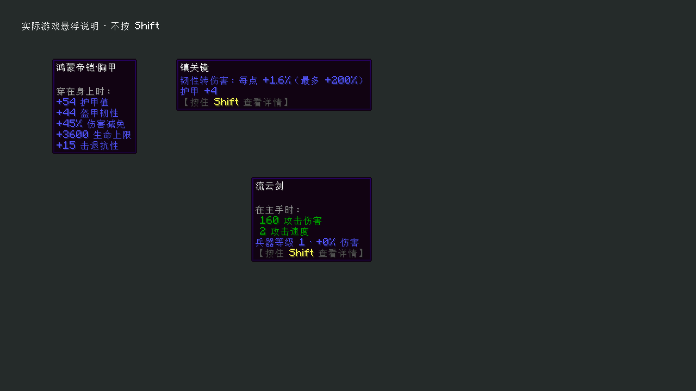
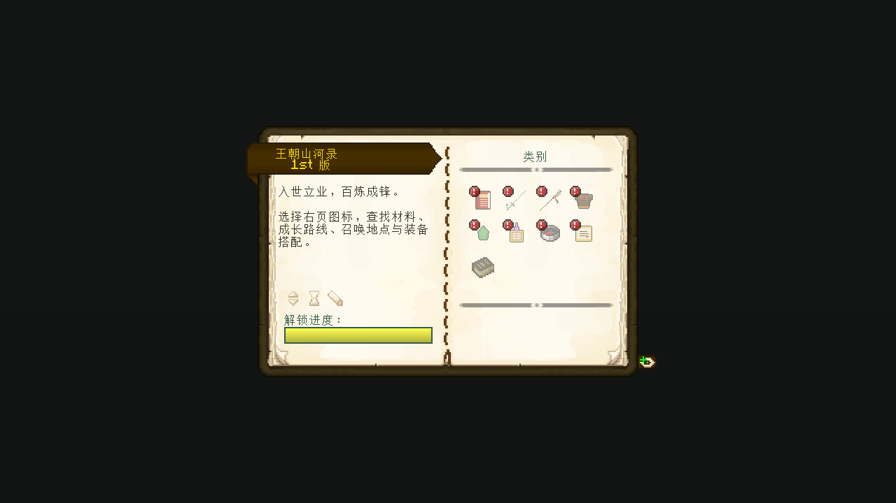
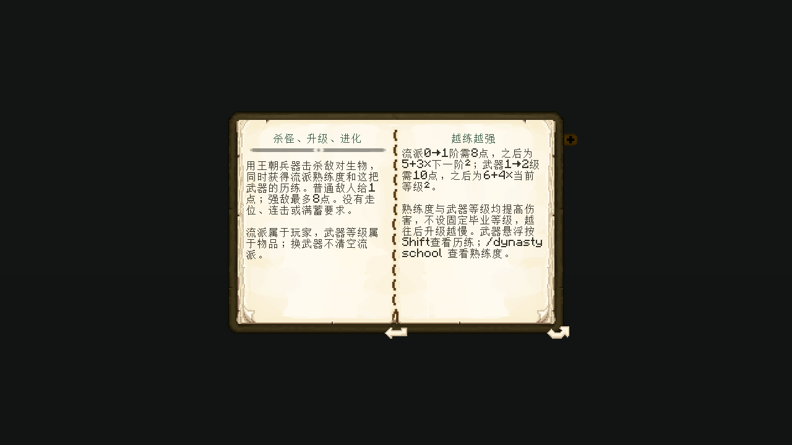
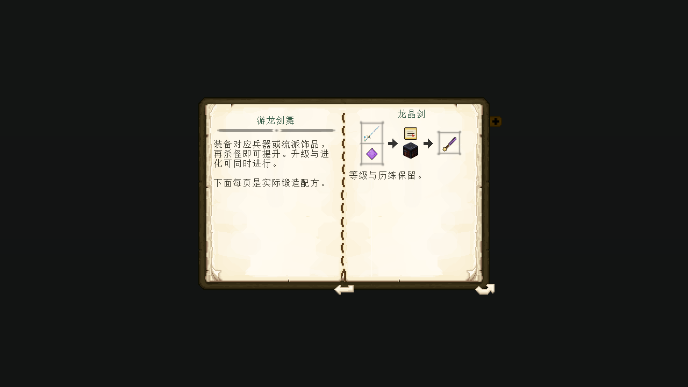

杀怪成长 · 兵器进化 · 王朝山河录
下列图片来自真实 Minecraft 客户端中的独立测试世界与原生界面渲染，不是概念效果图。没有进入或修改你的存档。
属性只显示一遍
护甲、韧性、减伤、生命上限统一排序；饰品去掉“常驻”，保留简短增益。详细内容按 Shift 查看。

新的双页引导书
原来的王朝引导书现在打开 Patchouli 图鉴：八个图标分类，可搜索、翻页、点击跳转和查看配方。

杀怪就能成长
流派熟练度和武器等级同时提升；不要走位、连段或满蓄作为升级条件。已有招式仍可使用，但不是成长门槛。

进化时保留等级
四条路线、十二条真实锻造配方。比如二级流云剑进化后仍是二级龙晶剑，并保留历练、附魔和名称。

任务页
移除装饰背景线，仅保留真实前置连线；新增二十四个进化备料与成品节点。旧任务 ID 与奖励不变。
查看更新后的任务布局预览（该链接是布局预览，不是游戏截图）
本轮新增模组
Patchouli：双页图鉴。Equipment Compare：装备属性对比。Lootr：多人独立战利品箱。
验证：54 项服务器 GameTest；任务、装备、语言和依赖校验；实际客户端打开图鉴与装备悬浮。重启游戏后加载新增模组。